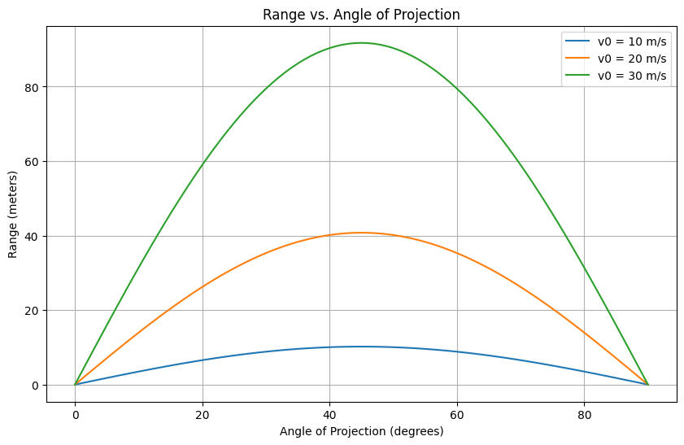

Investigating the Range as a Function of the Angle of Projection
Projectile motion is a classic yet endlessly fascinating topic in physics. It’s the perfect blend of simplicity and depth—starting with basic principles, we can unlock a wealth of understanding about how objects move through the air. Our goal here is to analyze how the horizontal range of a projectile depends on its launch angle, explore the influence of various parameters, and bring it to life with a computational simulation.
1. Theoretical Foundation
Deriving the Equations of Motion
Let’s start from the ground up with Newton’s second law. For a projectile launched with an initial velocity \(v_0\) at an angle \(\theta\) from the horizontal, we assume no air resistance (we’ll revisit this assumption later). The only force acting is gravity, with acceleration \(g\) downward.
- Coordinate System: Define \(x\) as the horizontal direction and \(y\) as vertical, with the origin at the launch point (\(y_0 = 0\) for now).
- Forces: No horizontal force (\(F_x = 0\)), vertical force is gravity (\(F_y = -mg\)).
The accelerations are: - \(a_x = \frac{d^2x}{dt^2} = 0\) - \(a_y = \frac{d^2y}{dt^2} = -g\)
Integrate these differential equations: - Horizontal: \(\frac{dx}{dt} = v_x = v_0 \cos\theta\) (constant, since \(a_x = 0\)) - \(x(t) = (v_0 \cos\theta) t\) - Vertical: \(\frac{dy}{dt} = v_y = v_0 \sin\theta - gt\) - \(y(t) = (v_0 \sin\theta) t - \frac{1}{2} g t^2\)
These are the parametric equations of motion. The projectile follows a parabolic trajectory, and the family of solutions depends on \(v_0\), \(\theta\), and \(g\). If we include an initial height \(y_0\), the vertical equation becomes: - \(y(t) = y_0 + (v_0 \sin\theta) t - \frac{1}{2} g t^2\)
Time of Flight
The projectile hits the ground when \(y(t) = 0\). For \(y_0 = 0\): - \(0 = (v_0 \sin\theta) t - \frac{1}{2} g t^2\) - Factor out \(t\): \(t [v_0 \sin\theta - \frac{1}{2} g t] = 0\) - Solutions: \(t = 0\) (launch) or \(t = \frac{2 v_0 \sin\theta}{g}\) (time of flight, \(T\)).
2. Analysis of the Range
Range Equation
The horizontal range \(R\) is the distance traveled when \(y = 0\): - \(R = x(T) = (v_0 \cos\theta) \cdot \frac{2 v_0 \sin\theta}{g}\) - Using the identity \(\sin(2\theta) = 2 \sin\theta \cos\theta\): - \(R = \frac{v_0^2 \sin(2\theta)}{g}\)
This is the key relationship! The range depends on: - \(\theta\): Through \(\sin(2\theta)\), which peaks at \(2\theta = 90^\circ\), so \(\theta = 45^\circ\) maximizes \(R\). - \(v_0\): Quadratically, so doubling the speed quadruples the range. - \(g\): Inversely, so stronger gravity reduces range.
Parameter Influence
- Angle (\(\theta\)): \(R = 0\) at \(\theta = 0^\circ\) or \(90^\circ\) (straight along or up), with a maximum at \(45^\circ\).
- Initial Velocity (\(v_0\)): Higher \(v_0\) stretches the parabola, increasing \(R\).
- Gravity (\(g\)): On the Moon (\(g \approx 1.62 \, \text{m/s}^2\)), range is much larger than on Earth (\(g \approx 9.81 \, \text{m/s}^2\)).
3. Practical Applications
This model applies to: - Sports: A soccer ball kicked at an angle—45° gives the farthest distance on flat ground. - Engineering: Cannonball trajectories or water jets from a hose. - Astrophysics: Simplified rocket launches (ignoring air resistance initially).
For uneven terrain (e.g., \(y = 0\) at a different height), adjust the time-of-flight equation. With air resistance, the equations become nonlinear, requiring numerical solutions—think of a golf ball’s dimples reducing drag.
4. Implementation
Let’s simulate this in Python using NumPy and Matplotlib. 
```python import numpy as np import matplotlib.pyplot as plt
Parameters
g = 9.81 # m/s^2 v0_values = [10, 20, 30] # initial velocities (m/s) theta_deg = np.linspace(0, 90, 91) # angles from 0 to 90 degrees theta_rad = np.radians(theta_deg)
Range function
def range_proj(v0, theta, g): return (v0**2 * np.sin(2 * theta)) / g
Compute ranges for different v0
ranges = {v0: range_proj(v0, theta_rad, g) for v0 in v0_values}
Plotting
plt.figure(figsize=(10, 6)) for v0, R in ranges.items(): plt.plot(theta_deg, R, label=f'v0 = {v0} m/s') plt.xlabel('Angle of Projection (degrees)') plt.ylabel('Range (meters)') plt.title('Range vs. Angle of Projection') plt.legend() plt.grid(True) plt.show()
Highlight maximum range at 45 degrees
for v0 in v0_values: R_max = range_proj(v0, np.radians(45), g) print(f"Max range for v0 = {v0} m/s at 45°: {R_max:.2f} m")